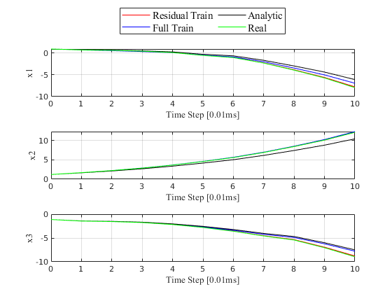
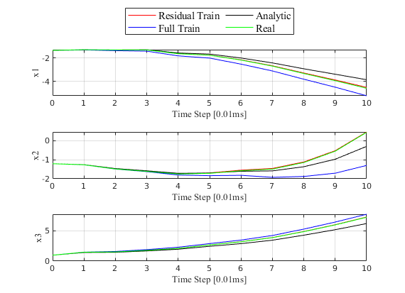
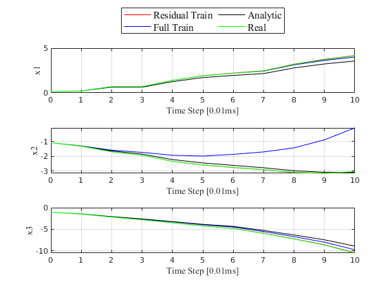
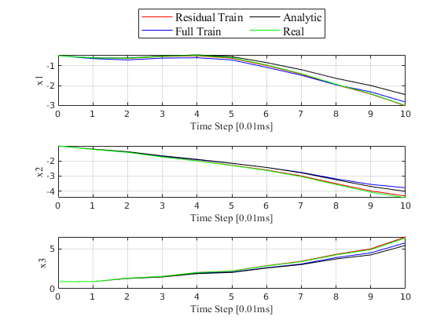
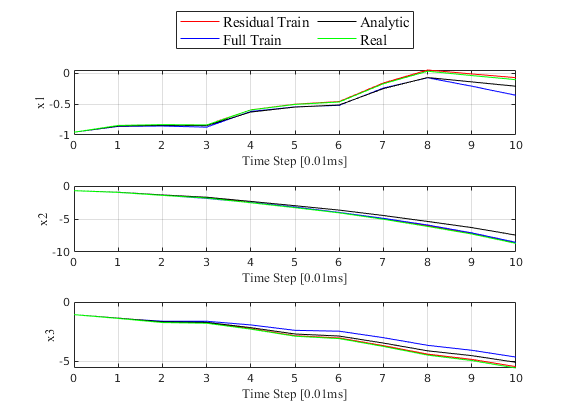

Contents
function [traj_err] = prediction_check(PLOT_DATA, NN_NAME, NN_NAME_FULL, TEST_NUM, Ts, Np)
close all
fprintf("\n======== Prediction Test at %s ========\n", char(datetime))
======== Prediction Test at 2023-05-10 20:05:21 ========
args
if nargin == 3
TEST_NUM = 5;
Ts = 0.01; Np = 100; Nc = Np;
elseif nargin < 5
NN_NAME = "0510_0726PM_MY_PDE/FINAL1000";
NN_NAME_FULL = "0510_0725PM_MY_PDE/FINAL1000";
TEST_NUM = 10;
Ts = 0.01; Np = 10; Nc = Np;
PLOT_DATA = true;
end
overwrite constant!
rng(0);Nc = Np;
simulation constants
state_num = 3;
control_num = 3;
prediction test constants
format shortEng
format compact
network load
fprintf("Loading Neural Network NN_NAME_FULL: %s\n", NN_NAME_FULL)
nn_full = "./" + NN_NAME_FULL + ".onnx";
nn_full = importONNXNetwork( ...
nn_full, TargetNetwork="dlnetwork", InputDataFormats="BC", OutputDataFormats="BC" ...
);
fprintf("Loading Neural Network NN_NAME: %s\n", NN_NAME)
nn = "./" + NN_NAME + ".onnx";
nn = importONNXNetwork( ...
nn, TargetNetwork="dlnetwork", InputDataFormats="BC", OutputDataFormats="BC" ...
);
Loading Neural Network NN_NAME_FULL: 0510_0725PM_MY_PDE/FINAL1000
Loading Neural Network NN_NAME: 0510_0726PM_MY_PDE/FINAL1000
target, prediction calc
prediction_G_list = zeros(1+Np, state_num*TEST_NUM);
prediction_FG_list = zeros(1+Np, state_num*TEST_NUM);
prediction_anglytic_list = zeros(1+Np, state_num*TEST_NUM);
obs_state_list = zeros(1+Np, state_num*TEST_NUM);
report_list = zeros(TEST_NUM, 5);
q = 1;
fprintf("Prediction Start\n")
while true
if q == TEST_NUM+1
break
end
sample = (rand([6,1]) - 1/2) * 2 * 1.5;
controlInput = zeros(Np, control_num);
controlInput(2:end,:) = (rand([Np-1,3]) - 1/2) * 2 * 1.5;
controlInput(1,:) = sample(4:6)';
controlInput = controlInput';
controlInput = reshape(controlInput, [], 1);
g0 = analy_G(sample);
dgdx0 = analy_dGdX(sample);
f0 = analy_F(sample);
dfdx0 = analy_dFdX(sample);
input_sample = dlarray(sample, "CB");
pred_fg0 = extractdata(predict(nn_full, input_sample));
prediction_err_full = g0 + f0 - pred_fg0;
report_list(q, 2) = norm(prediction_err_full, 2);
pred_dfgdx0 = zeros(3,6);
for i = 1:1:3
[v,grad] = dlfeval(@model,nn_full,input_sample, i);
tmp = extractdata(grad);
pred_dfgdx0(i,:) = tmp(1:6);
end
pred_g0 = extractdata(predict(nn, input_sample));
prediction_err = g0 - pred_g0 ;
report_list(q, 1) = norm(prediction_err, 2);
pred_dgdx0 = zeros(3,6);
for i = 1:1:3
[v,grad] = dlfeval(@model,nn,input_sample, i);
tmp = extractdata(grad);
pred_dgdx0(i,:) = tmp(1:6);
end
cur_state = sample(1:3);
Dx = f0 + g0 - dfdx0 * sample - dgdx0 * sample;
Dx_analy = f0 - dfdx0 * sample;
Dx_full = pred_fg0 - pred_dfgdx0 * sample;
Dx_pred = f0 - dfdx0 * sample + pred_g0 - pred_dgdx0 * sample;
Dx = Dx * Ts;
Dx_analy = Dx_analy * Ts;
Dx_full = Dx_full * Ts;
Dx_pred = Dx_pred * Ts;
[obs_state, err] = pred_err_calc(dfdx0+dgdx0, Dx, cur_state, 0, controlInput, Np, Nc, Ts);
obs_state_list(:, (q-1)*3+1:(q-1)*3+3) = obs_state;
[traj, err] = pred_err_calc(dfdx0+pred_dgdx0, Dx_pred, cur_state, obs_state, controlInput, Np, Nc, Ts);
prediction_G_list(:, (q-1)*3+1:(q-1)*3+3) = traj;
report_list(q, 3) = norm(err, 2);
[traj, err] = pred_err_calc(pred_dfgdx0, Dx_full, cur_state, obs_state, controlInput, Np, Nc, Ts);
prediction_FG_list(:, (q-1)*3+1:(q-1)*3+3) = traj;
report_list(q, 4) = norm(err, 2);
[traj, err] = pred_err_calc(dfdx0, Dx_analy, cur_state, obs_state, controlInput, Np, Nc, Ts);
prediction_anglytic_list(:, (q-1)*3+1:(q-1)*3+3) = traj;
report_list(q, 5) = norm(err, 2);
q = q+1;
end
Prediction Start
plot and report
traj_err = [ ...
sqrt(mean(reshape(mean((prediction_G_list - obs_state_list).^2), [], TEST_NUM),2))'
sqrt(mean(reshape(mean((prediction_FG_list - obs_state_list).^2), [], TEST_NUM),2))'
sqrt(mean(reshape(mean((prediction_anglytic_list - obs_state_list).^2), [], TEST_NUM),2))'
]';
traj_err = array2table(traj_err, 'VariableNames', ...
{'G', 'FG', 'F'})
one_step_err = [...
sqrt(mean(reshape((prediction_G_list(2,:) - obs_state_list(2,:)).^2, [], TEST_NUM),2))'
sqrt(mean(reshape((prediction_FG_list(2,:) - obs_state_list(2,:)).^2, [], TEST_NUM),2))'
sqrt(mean(reshape((prediction_anglytic_list(2,:) - obs_state_list(2,:)).^2, [], TEST_NUM),2))'
]';
one_step_err = array2table(one_step_err, 'VariableNames', ...
{'G', 'FG', 'F'})
x_axis = 0:1:Np;
if PLOT_DATA
if TEST_NUM <= 5
PLOT_NUM = TEST_NUM;
else
PLOT_NUM = 5;
end
for s = 1:1:PLOT_NUM
figure(s)
tiledlayout(3,1);
nexttile
plot(x_axis, prediction_G_list(:, (s-1)*3+1), 'r');
hold on
plot(x_axis, prediction_FG_list(:, (s-1)*3+1), 'b');
plot(x_axis, prediction_anglytic_list(:, (s-1)*3+1), 'k');
plot(x_axis, obs_state_list(:, (s-1)*3+1), 'g');
xlabel("Time Step [0.01ms]",'fontsize',10,'fontname', 'Times New Roman')
ylabel("x1",'fontsize',10,'fontname', 'Times New Roman')
grid on
nexttile
plot(x_axis, prediction_G_list(:, (s-1)*3+2), 'r');
hold on
plot(x_axis, prediction_FG_list(:, (s-1)*3+2), 'b');
plot(x_axis, prediction_anglytic_list(:, (s-1)*3+2), 'k');
plot(x_axis, obs_state_list(:, (s-1)*3+2), 'g');
xlabel("Time Step [0.01ms]",'fontsize',10,'fontname', 'Times New Roman')
ylabel("x2",'fontsize',10,'fontname', 'Times New Roman')
grid on
nexttile
plot(x_axis, prediction_G_list(:, (s-1)*3+3), 'r');
hold on
plot(x_axis, prediction_FG_list(:, (s-1)*3+3), 'b');
plot(x_axis, prediction_anglytic_list(:, (s-1)*3+3), 'k');
plot(x_axis, obs_state_list(:, (s-1)*3+3), 'g');
xlabel("Time Step [0.01ms]",'fontsize',10,'fontname', 'Times New Roman')
ylabel("x3",'fontsize',10,'fontname', 'Times New Roman')
grid on
lgd = legend('Residual Train', 'Full Train', 'Analytic', 'Real', ...
'fontsize',11,'fontname', 'Times New Roman');
lgd.Layout.Tile = 'north';
lgd.NumColumns = 3;
end
end
traj_err =
3×3 table
G FG F
________ _______ _______
0.053061 0.62392 0.42853
0.038799 0.7233 0.43239
0.046873 0.53539 0.45142
one_step_err =
3×3 table
G FG F
_________ ________ ________
0.001131 0.016982 0.013095
0.0015936 0.013404 0.023663
0.0017008 0.013392 0.027644
    
function to calculate gradient
function [y, g] = model(net, x, i)
y = forward(net, x);
y = y(i);
g = dlgradient(y, x);
end
end
ans =
3×3 table
G FG F
________ _______ _______
0.053061 0.62392 0.42853
0.038799 0.7233 0.43239
0.046873 0.53539 0.45142